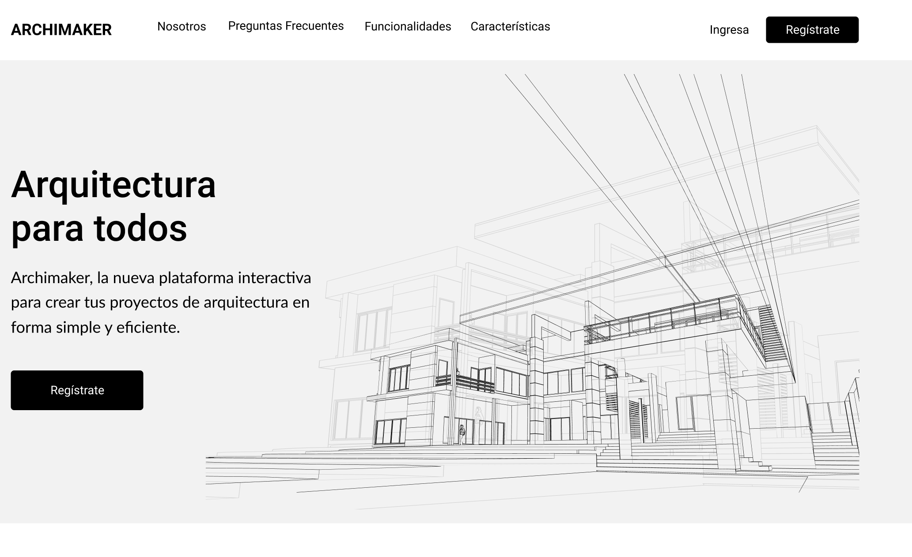
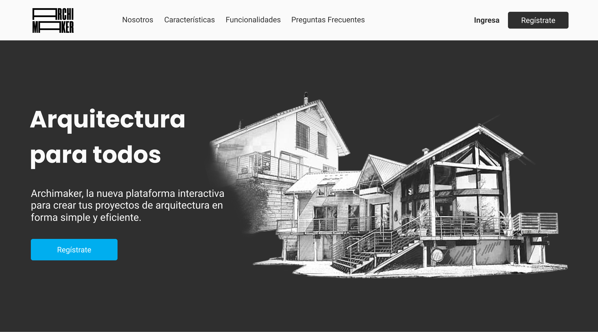

Investigación
El primer paso en la fase de investigación es entender de dónde partir, el contexto actual y comenzar a trazar el camino a recorrer. Para ello se utilizaron técnicas de análisis de usabilidad de la web actual, investigación minuciosa de la competencia y estudio detallado de la industria de la arquitectura y de las nuevas tendencias a nivel de tecnología. Para revisar la usabilidad y accesibilidad de Archimaker revisar aquí
Se realizo un Benchmark partiendo por crear una comparativa y análisis de rendimiento propio y de la competencia. Se indago en propuestas de distintas áreas que resaltaron por su funcionalidad o/y diseño dando como resultado lo siguiente
Luego se definieron algunos perfiles iniciales, para así obtener insights que ayudaran a conocer las necesidades y frustraciones del público objetivo y construir perfiles lo más representativos posibles. Se realizaron varias entrevistas con arquitectos, autoconstructores y usuarios no conocedores de área. Diseñe una pauta de entrevista para así consultar la percepción de los usuarios en relación con la página actual, las entrevistas fueron grabadas con el fin de analizar a detalle las respuesta y de esta forma poder plasmar las opiniones y sugerencias en la propuesta entregada a Archimaker.
Definición
Con todos los descubrimientos obtenidos en la fase de investigación procedi a definir con mayor detalle el perfil de los usuarios para así poder diseñar una experiencia acorde a sus necesidades. Ver User Persona aqui
Antes de adentrarme en la ideación, compare a través de un Scope Canvas las necesidades de los usuarios, los objetivos del negocio y las posibles soluciones propuestas para abordarlos. También defini las métricas para cuantificar el éxito de la propuesta. Ver aqui
El siguiente paso fue unificar y analizar toda la información recabada, luego mediante varias técnicas de Brainstorming propuse ideas y soluciones a los retos detectados durante todo el proceso de investigación. Para ver todo el detalle ingresar aqui
Diseño
Wireframe
Luego de una etapa de investigación profunda y testeos que proporcionaron las bases para diseñar la nueva arquitectura de la información para así facilitar la navegación y la presentación de un lenguaje más simple, me aboque a prototipar la propuesta visual para Archimaker.
Realice un Wireframe para definir mejor ciertas ideas y sugerencias recabadas de los testeos . El wireframe completo se puede observar aquí

Prototipo Alta Fidelidad
Diseñe un prototipo de alta fidelidad no solo de la página web sino también de la plataforma de construcción y dashboard. Cree distintas pantallas en versión desktop y móvil que le permitirán al usuario conocer mejor el objetivo de Archimaker e interactuar con cada unas de las opciones propuestas.
Puedes ver el prototipo final versión desktop en este enlace y la versión mobile en este link.
Características y Call to Action
Archimaker tiene excelentes características por ello se
busco resaltarlas en la página inicial, junto con un video explicativo de
como funciona la plataforma esta sección busca mostrar los beneficios que
ofrece Archimaker a los usuarios.
Actualmente la plataforma de Archimaker se esta desarrollando así que se decidio realizar un "Call to action" informando e invitando a los usuarios a registrarse y ser los primeros en enterarse cuando la plataforma estuviera operativa.
Adicional a las caracteísticas antes mencionadas se destacaron tres que son fundamentales para el proceso de diseño de un proyecto y esas son: Visualizador, Buscador y Dashboard, con imagenes los usuarios podrán conocer como seran estas cactarerísticas y cuales son sus ventajas
Aliados y Footer
En este espacio se destacaron todas esas empresas que testearon y aprobaron la plataforma de Archimaker. Se muestra la validación de estas entidades y busca generar confianza entre los usuarios que usaran Archimaker.
Se diseño un footer sencillo donde se destacara el logo de la empresa, también estan presente las redes sociales para que los usuarios puedan seguirlos y conocer novedades.
Otros Proyectos